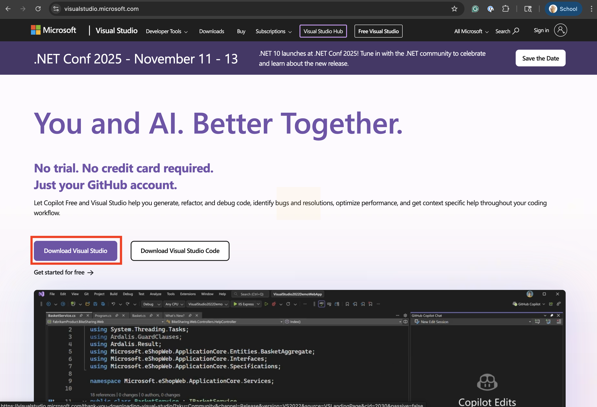
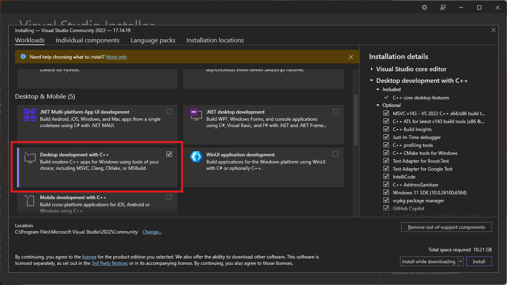
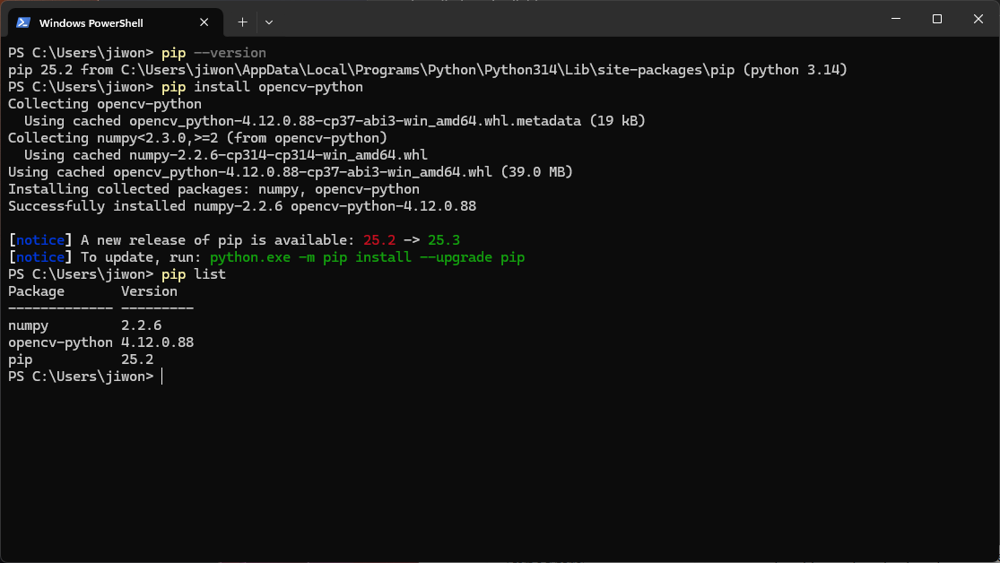

Digital Doubles - Week 1
This guide will walk you through setting up your development environment for the Digital Doubles course. Follow the instructions for your operating system carefully.
Before you begin, make sure you have:
First, check if you already have Python installed:
python --version or python3 --versionpython3 --versionPython 3.8 or higher, skip to Installing Required Packages.
1. Download Python:
2. Install Python:
3. Verify Installation:
python --versionPython 3.x.xOption 1: Using Homebrew (Recommended)
1. Install Homebrew (if not already installed):
/bin/bash -c "$(curl -fsSL https://raw.githubusercontent.com/Homebrew/install/HEAD/install.sh)"2. Install Python:
brew install python33. Verify Installation:
python3 --versionOption 2: Direct Download
python3 --version in TerminalPython 3 is usually pre-installed. If not:
sudo apt update
sudo apt install python3 python3-pipVerify:
python3 --versionNow we'll install OpenCV, NumPy, and Matplotlib.
Check if pip is installed:
Windows:
python -m pip --versionmacOS/Linux:
pip3 --versionIf pip is not found, install it:
Windows:
python -m ensurepip --upgrademacOS/Linux:
sudo apt install python3-pipWindows:
Before you install required packages for Windows, download Visual Studio.
Launch Visual Studio Installer and install Desktop development with C++.
Quit and relaunch cmd or powershell and run:
pip install opencv-python numpy matplotlibTo verify, run:
pip listIf everything is installed properly, you should see:
macOS/Linux:
pip3 install opencv-python numpy matplotlibThis will install:
The installation may take a few minutes. You'll see progress messages.
Let's make sure everything is installed correctly.
setup_verification.py file in the 01_setup_verification folderWindows:
python setup_verification.pymacOS/Linux:
python3 setup_verification.pyYou should see something like:
Python version:
3.10.x ...
✓ OpenCV installed successfully
OpenCV version: 4.8.1
✓ NumPy installed successfully
NumPy version: 1.24.3
✓ Matplotlib installed successfully
Matplotlib version: 3.7.1
If you see check marks (✓) for all packages, you're ready to go!You'll need a code editor to write Python. Here are recommended options:
test.pyGood for:
IDLE is automatically installed with Python. Search for "IDLE" in your applications.
Solution:
python -m pip instead of just pippip3 instead of pipSolution (macOS/Linux):
pip3 install --user opencv-python numpy matplotlibSolution (Windows):
--user flag: pip install --user opencv-python numpy matplotlibWindows:
macOS:
brew install --cask xquartzLinux:
sudo apt-get install python3-tk
sudo apt-get install libgl1-mesa-glxSolution:
py -3.10 or python3.10python3.10Solution:
1. Make sure you're using the same Python that pip installed to:
# Windows
where python
pip show opencv-python
# macOS/Linux
which python3
pip3 show opencv-python2. Both should point to the same Python installation
Solution:
This is a known issue. Try:
import cv2
cv2.namedWindow("window", cv2.WINDOW_NORMAL)
img = cv2.imread('image.jpg')
cv2.imshow('window', img)
cv2.waitKey(0)
cv2.destroyAllWindows()Or use matplotlib for display:
import cv2
import matplotlib.pyplot as plt
img = cv2.imread('image.jpg')
img_rgb = cv2.cvtColor(img, cv2.COLOR_BGR2RGB)
plt.imshow(img_rgb)
plt.show()Windows:
python script_name.pymacOS/Linux:
python3 script_name.pyQuestions? Email jiwon.shin@nyu.edu
Last Updated: October 2025